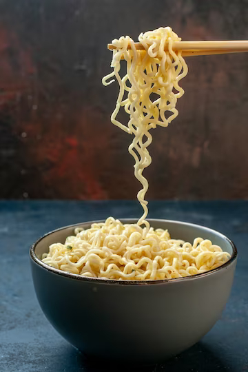

Prepped Noodles

A students best friend, can be mixed with basically anything: meat, veggies, eggs, cheese.
INGREDIENTS
- Packet of Noodles of Choice
- Olive Oil
- Salt + Optional: Other Spices to Taste
- Cheese
- 2 Eggs
- White Button Mushroom
STEPS
- add boiling water to a bowl of dried noodles. While they're soaking, heat up some olive oil on the pan.
- Add sliced white button mushroom to the pan. If the noodles are ready, scoop the noodles and add them to
the pan. Empty the remaining water from the bowl into the sink.
- Add the spices to taste.
- Add the two eggs into the pan, stirring immedietly to mix well with the noodles.
- Add the cheese once the eggs are mixed and cooked.
- Add to the bowl, and enjoy!